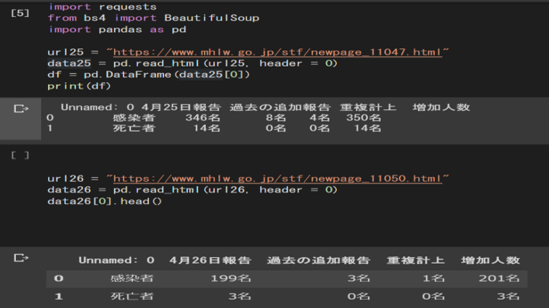
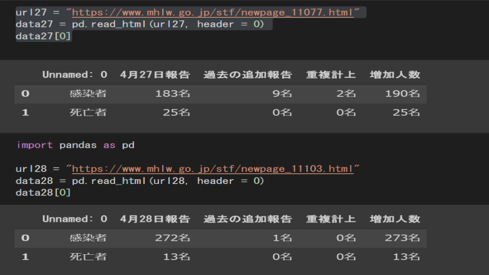
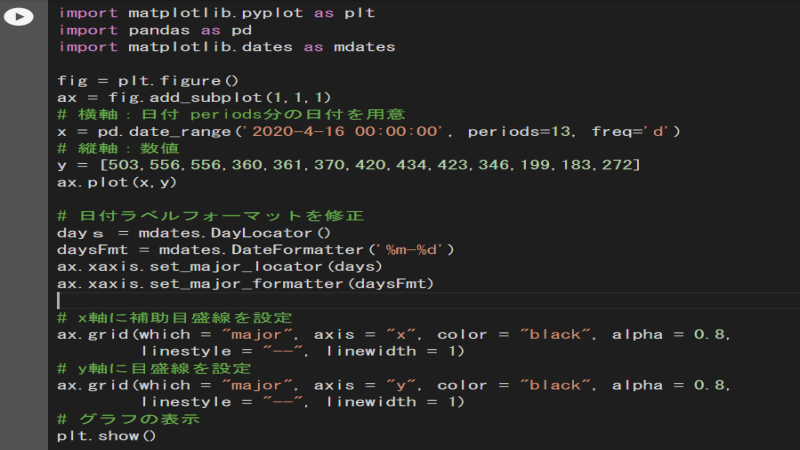
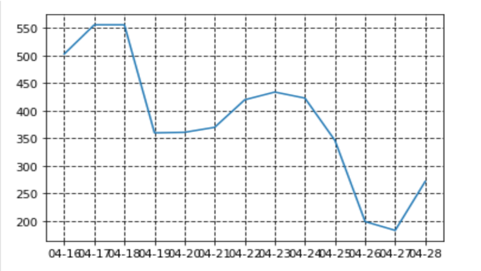

毎日更新される厚生労働省のサイトから、日ごとの感染者数をPythonを用いてスクレイピングする。その後、集めたデータをグラフ化する。
現在世界的に問題視されているのがコロナウイルスである。そこで、今回はコロナウイルスに関したことに取り組みたいと考えた。 さらに自身の取り組みであるPython学習に結び付けられることを試行錯誤した結果、今回の取り組み内容に決定した。一方で感染者数はすでに様々なサイトでグラフ化されており、オリジナリティがあるものを形にした方がよいのではないかという考えもあった。 しかし私はPython学習の初学者であり、すでに形があるものを選ぶことによって、完成形のイメージがしやすいと考えた。またプログラムを組みオリジナリティがあるものを作成できるほど、まだ自分のスキルが足りていないのも現状である。
Leagence ProgurammingというサイトでPythonの基礎・スクレイピング・Pandasを学ぶ→ 自分でもスクレイピングが出来そうなサイトを探す→ サイトなどを参考にしながら実際にスクレイピングする→抽出した数値をグラフ化させる。
今回書いたコードがこちら。4月25日の表だけDataFrame化させてみた。
 ここまでがスクレイピングのコードである。以下のコードはグラフ化させるためのものである。
実際に完成したグラフがこちら
始めてPythonを用いて目に見えるものを作成することが出来た。まだデータの規模が狭く、実用性は全くないが、どんなことでもまずは形にしてみることが大事だと自分に言い聞かせた。 わからないことを試行錯誤していく内に、学んだ知識と調べて分かったことが繋がる感覚を実感できた。その後「こうしたら成功するのではないか」という自分の考えを生み出すことが出来た。 今回の場合、表の数値を抽出するためにサイトの表をそのまま抽出するのではなく、DataFrame化させることで数値を抽出することに成功した。しかしグラフに利用できなかったのでまだまだ改善が必要である。
できれば表を抽出しただけでなく、その後のグラフ化に利用するために表内の数値をコードで選択し、自分の手で数値を入力するのではなく、コードで選択できるようにするべきである。 そのために表をDataFrame化して表から数値を選択することには成功したが、それをグラフに利用するとエラーが出てしまい利用できなかった。 厚生労働省のサイトが4月25にから感染者の数値を表にまとめているので、それ以前の数値はスクレイピングができず、自分の手で数値を入力してしまった。これでは全くプログラミングの意味がない。
引き続きLeagence Progurammingで学習を進めていく。次は機械学習やディープランニンングの分野にも取り組みたい。 また自分のスキルを生かしてゼミのメンバーが集めてほしい情報があれば、スクレイピングを生かして協力できるようにしたい。しかし現状ではどんなデータも集められるわけではない。
Python学習サイトがこちら
スクレイピングに参考にしたのがこちら
グラフ化に参考にしたのがこちら